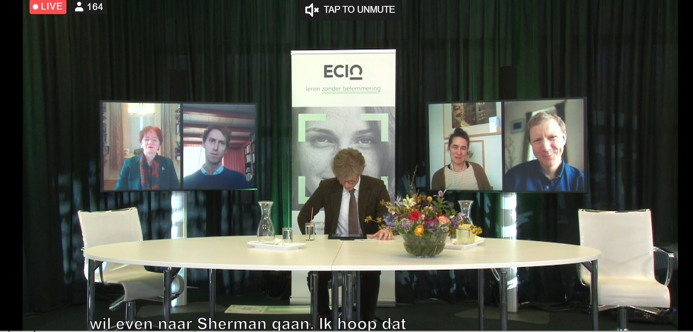
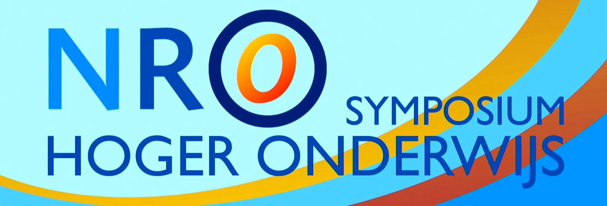
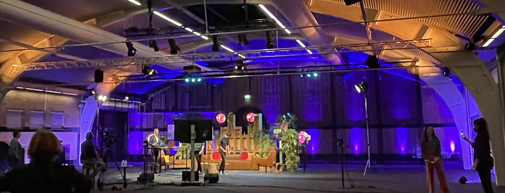

Klinkenberg
Research
Talks
Fun
Blogs
Projects
Talks
Webinar: Kansen en dilemma’s online proctoring na corona
Op vrijdag 26 maart organiseerde de Vraagbaak Online Onderwijs met de SURF Special Interest Group (SIG) Digitaal toetsen en de Werkgroep Toetsen op afstand het webinar…
Mar 26, 2021
Klinkenberg

ECIO congress 2021
Make inclusion a priority!
Panel participation at the ECIO congress 2021 on inclusive assessment. What is needed to make assessment more accessible.
Feb 8, 2021
Klinkenberg

NRO Symposium hoger onderwijs
Nieuwe richtingen na de pandemie?
Bijdrage aan het NRO Symposium 2021.
Jan 15, 2021
Klinkenberg
Webinar Online proctoring for the future
Since the lockdown in March 2020 we have seen an enormous growth in the number of digital exams. Online proctoring in particular has been subject to a lot of discussion. The…
Dec 14, 2020
Klinkenberg

Keuzes en mogelijkheden bij toepassing van online proctoring
SURF Onderwijsdagen 2020
Online proctoring, welke waardendilemma’s spelen binnen onderwijsinstellingen bij de toepassing ervan? Een student, een functionaris gegevensbescherming en een…
Dec 8, 2020
Klinkenberg
Tips for Methodology Teaching
Chip Huisman, an experienced methodology teacher within the Sociology department recently interviewed Sharon Klinkenberg about moving methodology teaching online.
Nov 2, 2020
Klinkenberg
Workflow Digitaal Toetsen
Kennisdelingsessie Digitaal Toetsen en Toetsproces - UvA
Duurzaam en robuuste inrichting van het digitale toetsproces.
Jul 7, 2020
Klinkenberg
Online workshop: Introduction to R, Rstudio, Rstudio Cloud and Rmarkdown
Amsterdam Institute for Social Science Research (AISSR) - UvA
In this workshop, we will dive into using Rmarkdown for presentations and reproducible research. We will use Rstudio cloud for education. At the end of this workshop, you…
Jun 19, 2020
Klinkenberg
Naar een inrichtingsmodel voor flexibele en veilige toetsafname
Sharon Klinkenberg, voorzitter van SIG DT, startte de bijeenkomst met een droomscenario, voortbouwend op de 2e expertbijeenkomst in november 2018. Hij schetst een…
May 24, 2019
Klinkenberg
De weg naar Digitaal Toegankelijk Toetsen
In this talk we discussed the state of large scale digital assessment in higher education and what is needed to facilitate accessibility. The main take away, first make sure…
Mar 14, 2019
Klinkenberg
Role of Assessment for Remediation
Assessing the effectiveness of a course design in higher education is an almost unfeasible task. The practical inability to conduct randomised controlled trials in a natural…
Feb 19, 2019
Klinkenberg
Geen flexibilisering zonder digitaal toetsen
De onderwijsdagen 2018 - SURF
Digitaal toetsen heeft de afgelopen 10 jaar een enorme vlucht gemaakt. Instellingen hebben geïnvesteerd in enorme toetszalen, toetsapplicaties aangeschaft en het…
Nov 6, 2018
Klinkenberg , Draaijer
Blended Learning: Beyond the Hype
Blended Learning is all the rage these days, but is it that new? And is it as difficult as some people might think? We are going to show you all the ways you are already…
Sep 18, 2018
Klinkenberg
Blended M&T
Presentation on how we implemented blended learning in our methods and statistics education at the department of Psychology at the University of Amsterdam.
Jun 12, 2018
Klinkenberg
Using personalized learning in your class
Want to get the most out of your students? This is what you need to know: course design should be focused on assessing student ability, diagnosing weaknesses and strengths…
May 31, 2017
Klinkenberg
No matching items